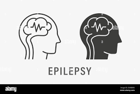

Prediction Result: {{ result }}
{% endif %}The Seizure Detection Project aims to improve the early detection and monitoring of epileptic seizures using advanced machine learning algorithms. By analyzing EEG data, our project identifies patterns indicative of seizures, providing valuable insights for both patients and healthcare professionals.
Objective: To develop an innovative solution for early detection and monitoring of epileptic seizures using advanced machine learning algorithms and EEG data analysis.
The Seizure Detection Project is a groundbreaking initiative that leverages cutting-edge technology to improve the quality of life for individuals with epilepsy.
By analyzing EEG (Electroencephalogram) data, our system detects patterns indicative of epileptic seizures, enabling early intervention and better management of the condition. This project aims to provide accurate, real-time seizure detection, enhancing the safety and well-being of epilepsy patients.
EEG data is collected from sensors placed on the scalp of the patient. These sensors record electrical activity in the brain.Relevant features are extracted from the preprocessed EEG data. These features serve as input for the machine learning algorithms.Upload input data file.
The extracted features are fed into machine learning models, which have been trained to recognize patterns associated with seizures.Click Predict Button.
The machine learning algorithms analyze the input features in real-time. If patterns indicative of a seizure are detected, the system triggers an Output.
We'd love to discuss how we can apply our approach
to improve the health of our community.
If you have any questions or inquiries, feel free to email us: